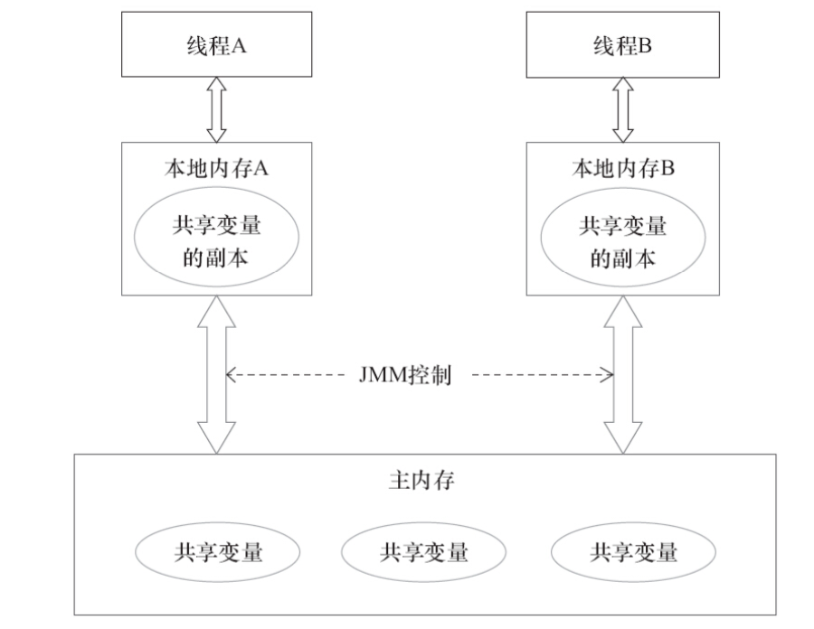
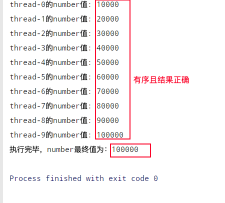
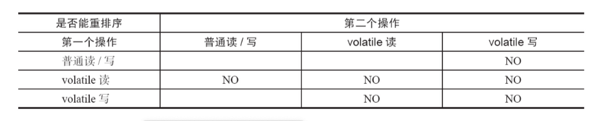

目录
一、java内存模型
1.1、抽象结构图
1.2、概念介绍
二、volatile详解
2.1、概念
2.2、保证内存可见性
2.3、不保证原子性
2.4、有序性

java 内存模型
即Java memory model(简称JMM), java线程之间的通信由JMM控制，决定一个线程对共享变量的写入何时对另一个线程可见。多线程通信通常分为2类：共享内存和消息传递
JMM采用的就是共享内存来实现线程间的通信，且通信是隐式的，对程序开发人员是透明的，所以在了解其原理了，才会对线程之间通信，同步，内存可见性问题有进一步认识，避免开发中出错。线程之间如何通信？
在java中多个线程之间要想通信，如上图所示，每个线程在需要操作某个共享变量时，会将该主内存中这个共享变量拷贝一份副本存在在自己的本地内存（也叫工作内存，这里只是JMM的一个抽象概念，即将其笼统看做一片内存区域，用于每个线程存放变量，实际涉及到缓存，寄存器和其他硬件），线程操作这个副本，比如 int i = 1；一个线程想要进行 i++操作，会先将变量 i =1 的值先拷贝到自己本地内存操作，完成 i++，结果 i=2，此时主内存中的值还是1，在线程将结果刷新到主内存后，主内存值就更新为2，数据达到一致了。
如果线程A，线程B同时将 主内存中 i =1拷贝副本到自己本地内存，线程A想要 将i+1,而线程B想要将 int j=i，将赋值给j,那么如何保证线程之间的协作，此时就会涉及到线程之间的同步以及内存可见性问题了。（后文分析synchronized/lock）
那线程之间实现通信需要经过2个步骤，借助主内存为中间媒介：
线程A （发送消息）-->（接收消息） 线程B
1、线程A将本地内存共享变量值刷新到主内存中，更新值；
2、线程B从主内存中读取已更新过的共享变量；共享内存中涉及到哪些变量称为共享变量？
这里的共享内存指的是jvm中堆内存中，所有堆内存在线程之间共享,因为栈中存储的是方法及其内部的局部变量，不在此涉及。
共享变量：对于多线程之间能够共同操作的变量，包含实例域，静态域，数组元素。即有成员变量，静态变量等等，
不涉及到局部变量（所以局部变量不涉及到内存可见性问题）多线程在java内存模型中涉及到三个问题
-1、volatile 是 java中的关键字，可修饰字段，可以保证共享变量的在内存的可见性，有序性，不保证原子性。
-2、作用：在了解java内存模型后，才能更加了解volatile在JMM中的作用，volatile在JMM中为了保证内存的可见性，即是线程之间操作共享变量的可见性。volatile 写的内存语义：
当写一个volatile修饰的共享变量时，JMM会把该线程的本地内存的共享变量副本值刷新到主内存中；
volatile 读的内存语义：
当读一个volatile修饰的共享变量时，JMM会将该线程的本地内存的共享变量副本置为无效，要求线程重新去主内存中获取最新的值。不冲突！java内存模型控制线程工作内存与主内存之间共享变量会同步，即线程从主内存中读一份副本到工作内存，又刷新到主内存，那怎么还需要 volatile来保证可见性，不是JMM自己能控制吗，一般情况下JMM可以控制 2份内存数据一致性，但是在多线程并发环境下，虽然最终线程工作内存中的共享变量会同步到主内存，但这需要时间和触发条件，线程之间同时操作共享变量协作时，就需要保证每次都能获取到主内存的最新数据，保证看到的工作变量是最后一次修改后的值，这个JMM没法控制保证，这就需要volatile或者后文要讲的 synchronized和锁的同步机制来实现了。1、多个线程出现内存不可见问题示例
/**
* @author zdd
* Description: 测试线程之间，内存不可见问题
*/
public class TestVisibilityMain {
private static boolean isRunning = true;
// 可尝试添加volatile执行，其余不变，查看线程A是否被停止
//private static volatile boolean isRunning = true;
public static void main(String[] args) throws InterruptedException {
//1,开启线程A,读取共享变量值 isRunning，默认为true
new Thread(()->{
// --> 此处用的lamda表达式，{}内相当于Thread的run方法内部需执行任务
System.out.println(Thread.currentThread().getName() + "进入run方法");
while (isRunning == true) {
}
System.out.println(Thread.currentThread().getName()+"被停止！");
},"A").start();
//2，主线程休眠1s, 确保线程A先被调度执行
TimeUnit.SECONDS.sleep(1);
//3,主线程修改共享变量值 为flase,验证线程A是否能够获取到最新值，跳出while循环 --> 验证可见性
isRunning =false;
System.out.println(Thread.currentThread().getName() +"修改isRunning为: " + isRunning);
}
} 执行结果如下图：
上面代码 while里面是一个空循环，没有操作，如果我在里面加一句打印语句，线程A会被停止，这是怎么回事呢？
原：while (isRunning == true) {}
改1：
while (isRunning == true) {
System.out.println("进入循环");
}
原来 println方法里面加了 synchronized关键字，在加了锁既保证原子性，也保证了可见性，会实现线程的工作内存与主内存共享变量的同步。
源代码如下：
public void println(String x) {
synchronized (this) {
print(x);
newLine();
}
}
改2：
while (isRunning == true) {
//改为这样，也可以停止线程A
synchronized (TestVisibilityMain.class){}
}/**
* @author zdd
* Description: 测试volatile的不具有原子性
*/
public class TestVolatileAtomic {
private static volatile int number;
//开启线程数
private static final int THREAD_COUNT =10;
//执行 +1 操作
public static void increment() {
//让每个线程进行加1次数大一些，能够更容易出现volatile对复合操作（i++）没有原子性的错误
for (int i = 0; i < 10000; i++) {
number++;
}
System.out.println(Thread.currentThread().getName() +"的number值: "+number);
}
public static int getNumber() {
return number;
}
public static void main(String[] args) throws InterruptedException {
TestVolatileAtomic volatileAtomic = new TestVolatileAtomic();
Thread[] threads = new Thread[THREAD_COUNT];
for (int i = 0; i < THREAD_COUNT; i++) {
threads[i]=
new Thread(()->{
// 做循环自增操作
volatileAtomic.increment();
System.out.println(Thread.currentThread().getName() +"的number值: "+volatileAtomic.getNumber());
},"thread-"+i);
}
for (int i = 0; i <10; i++) {
//开启线程
threads[i].start();
}
//主线程休眠4s，确保上面线程都执行完毕
TimeUnit.SECONDS.sleep(4);
System.out.println("执行完毕，number最终值为："+volatileAtomic.getNumber());
}
}
执行结果：number的最后值不一定是 10*10000= 100000的结果
//1,increment（）方法上加上 synchronized关键字同步
public static synchronized void increment() {
//让每个线程进行加1次数大一些，能够更容易出现volatile对复合操作（i++）没有原子性的错误
for (int i = 0; i < 10000; i++) {
number++;
}
System.out.println(Thread.currentThread().getName() +"的number值: "+number);
}
//2,使用Lock,使用其实现类可重入锁 ReentrantLock
static Lock lock = new ReentrantLock();
//执行 +1 操作
public static void increment() {
lock.lock();
try {
for (int i = 0; i < 10000; i++) {
number++;
}
System.out.println(Thread.currentThread().getName() + "的number值: " + number);
} finally {
lock.unlock();
}
}运行结果如图：

对单个volatile变量的读/写具有原子性，而对像 i++这种复合操作不具有原子性。
上面代码 i++操作可以分为3个步骤
-1 先读取变量i的值 i
-2 进行i+1操作 temp= i+1
-3 修改i的值 i= temp
比如：比如在线程A，B同时去操作共享变量i, i的初始值为10，A，B同时去获取i的值，A对i进行 temp =i+1，此时i的值还没变， 线程B也对i进行 temp=i+1了，线程A执行i=temp的操作，i的值变为11，此时由于 volatile可见性，会刷新A的 i值到主内存，主内存中i此时也更新为11了，线程B接收到通知自己i无效了，重新读取i=11,虽然i=11，但是已经进行过 temp= i+1了，此时temp =11，线程B继续第三步，i=temp =11, 预期结果是i被A，B自增各一次，结果i=12，现在为11，出现数据错误。-1,重排序概念：重排序是编译器和处理器为了优化程序性能而对指令序列重新排序的一种手段
即：程序员编写的程序代码的顺序，在实际执行的时候是不一样的，这其中编译器和处理器在不影响最终执行结果的基础上会做一些优化调整，有重新排序的操作，为了提高程序执行的并发性能。
-2,重排序分类： 编译重排序，处理器重排序
-4,单线程下，重排序没有问题，但是在多线程环境下，可能会破坏程序的语义.为了实现volatile的内存语义，JMM会限制编译器和处理器重排序
-1 制定了重排序规则表防止编译器重排序
volatile重排序规则表（图摘自书-并发编程的艺术）

-2 插入内存屏障防止处理器重排序
参考资料：
1、Java并发编程的艺术- 方腾飞
2、java多线程编程核心技术- 高洪岩